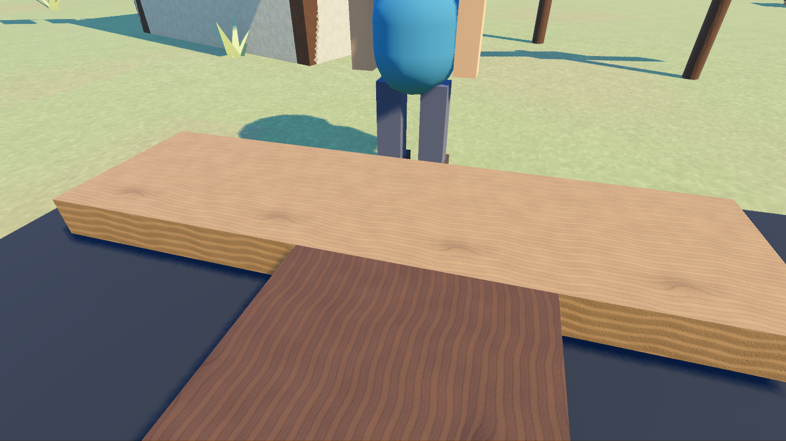
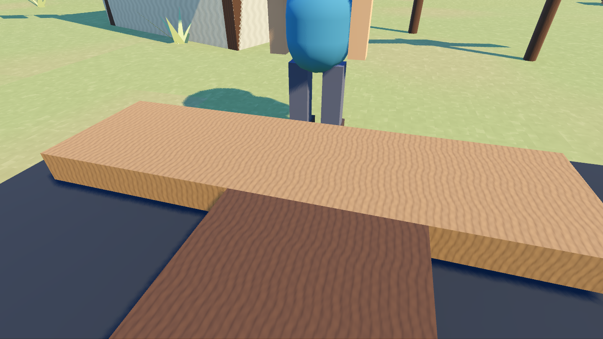

地面、木材与铁皮已接入更细致的材质
保留当前低多边形造型，通过细节法线、粗糙度变化、木纹方向和金属分区增强表面真实感。所有纹理由程序生成，按种类共享；木材和铁皮提升到 512×512，其余保持 128×128。
拖动查看真实游戏前后对比


升级前升级后固定地图种子 20260921、相同机位、视场角 58°、游戏时刻 0.39、1440×810。木板和铁皮样板调用正式游戏使用的材质工厂。动态动物位置可能因帧时序略有差异；光照参数保持相同。
改动带来的具体效果
| 部分 | 最终实现 |
|---|---|
| 木材 | 扭曲木纹、结疤、毛孔与局部粗糙度。纹理沿构件本地最长边排列，构件旋转后方向仍正确；截面使用年轮。 |
| 铁皮 | 保留波纹，增加掉漆、锈迹、裸露金属与对应反射参数；旧金属保持划痕带来的粗糙度。整张贴图 37×37 采样的掉漆权重均值为 6.15%，漆面占主体。 |
| 地面 | 增加多尺度、不同方向的微凹凸与连续土色变化，陡坡混入岩石色。近景有砂粒，远景细节淡出；湿土变暗并降低粗糙度，湿草保留较哑光的表面。 |
| 资源与渲染 | 六类纹理共用缓存，物体颜色与木纹方向不会产生新纹理。法线采用周期邻域生成，纹理带 mipmaps；世界坐标差分避免在地形网格边缘产生法线伪影。 |
验证结果
| 检查 | 结果 |
|---|---|
| 材质检查 | 8265 项断言，fails=0；Forward+ 与 Mobile 渲染模式均验证。检查二维纹理样本、有效法线、缓存、粗糙度变化、木纹方向、金属分区与干湿变化。 |
| 游戏回归 | 物理 23/23、战斗 102/102、水域 37/37；室内、端到端检查均为 fails=0。 |
| 界面回归 | UI 1907 项通过；8 种横竖屏触控分辨率均为 bad=0。 |
| 实际截图 | 木板、铁皮、地面干湿状态和小镇中景均已查看；Godot 导入无脚本解析错误，真实渲染无 shader 错误。 |
性能取舍
| 本机采样 | 升级前 | 升级后 |
|---|---|---|
| headless 世界创建，两次串行独立进程平均 | 13.84 秒 | 14.84 秒（约 +1 秒） |
| 渲染内存统计 | 192.79 MiB | 200.80 MiB（+8.01 MiB） |
| 窗口主循环帧间隔中位数，240 帧 | 5.54 ms | 5.57 ms |
| 相同采样的 P95 帧间隔 | 6.38 ms | 7.21 ms |
Godot 4.7.2 / Windows / RTX 5060 Laptop。帧间隔包含主循环与显示同步，不能当作独立 GPU 耗时；采样量较小。材质首次生成约 0.67 秒，之后复用缓存。Mobile 模式在桌面显卡运行，手机实机性能尚未验证。
复查入口
tools/materials_check.tscn 在窗口模式运行，用渲染器读回纹理；tools/realism_shot.tscn 生成固定条件截图并采样性能，可通过 -- --dir res://realism_shots/ 指定目录。加 -- --build-only 时只计世界创建耗时，可在 headless 运行。
2026-10-05 · 升级前基于 main 的 bb7cf04。测试和截图使用隔离副本，避免影响真实存档。